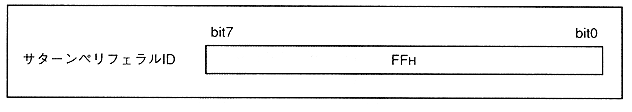
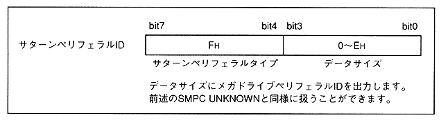

Table 3.9 Peripheral data size and port mode combinations (multi-tap)
| | Port mode (IRG1 setting) |
||
15 | 255 |
||
Peripheral data | 15 | Peripheral Data Configuration 1 |
|
16-255 | Peripheral | Peripheral |
|
Not connected | Tap peripheral not connected |
||
UNKNOWN | Tap peripheral |
||
Figure 3.19 Saturn peripheral ID when no peripheral is connected to the tap

Figure 3.20 Saturn peripheral ID when UNKNOWN peripheral is connected to the tap
